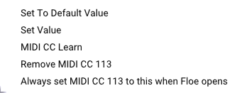

MIDI
Map parameters to MIDI CC
All automatable parameters in Floe can be assigned to a MIDI CC. This allows you to control Floe from a MIDI controller for example.
To do this, right-click on the parameter you want to assign, and select ‘MIDI Learn’. Then move the control on your MIDI controller that you want to assign to that parameter. This will create a mapping between the parameter and the MIDI CC.
You can remove this mapping by right-clicking on the parameter and selecting ‘Remove MIDI Learn’.
This mapping is saved with your DAW project. But it’s not permanent. It only applies to the current instance of Floe in your DAW, and it won’t be the applied if you load a new instance of Floe.
Preset files do not save MIDI CC mappings. So you can load presets and your MIDI CC mappings will remain.

Make MIDI CC mapping more permanent
You can make the MIDI CC mapping more permanent by right clicking on a ‘MIDI learned’ parameter and selecting ‘Always set MIDI CC to this when Floe opens’. As the name suggests, when you open Floe, the MIDI CC mapping will be added.
Sustain Pedal
Floe can be controlled with a sustain pedal. A sustain pedal is a special kind of MIDI controller that sends MIDI CC-64 messages. These messages represent an on or off state.
When Floe receives a sustain pedal on message, all notes that are currently held will sustain until a corresponding sustain pedal off message is received. The notes will persist even if the notes are released from the keyboard. Only releasing the sustain pedal will trigger them to stop. This is a common behaviour for synths and samplers alike. It roughly simulates the behaviour of a real piano sustain pedal.
Sustain Pedal Retrigger Mode
Each layer in Floe has a switch that changes the behaviour when pressing the same note multiple times while the sustain pedal is held down. This parameter can be found in the MIDI tab of each layer and is called ‘CC64 Retrig’.
When ‘CC64 Retrig’ is turned off, and you are holding the sustain pedal down, nothing happens if you press the same key multiple times — the new up and down is ignored — the sound continues to sustain just as it did before.
However, when ‘CC64 Retrig’ is on, the note is retriggered (the sound ends and a new one starts); this behaviour tends to be the more intuitive option. Note that this switch is per-layer, not global. This allows for more powerful customisation of a preset.